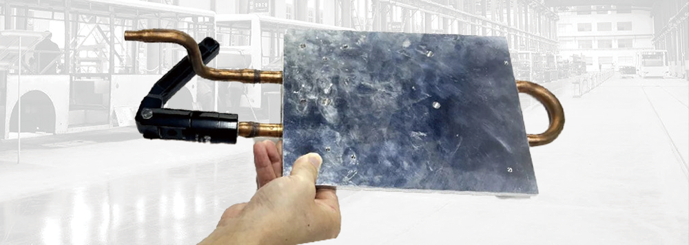
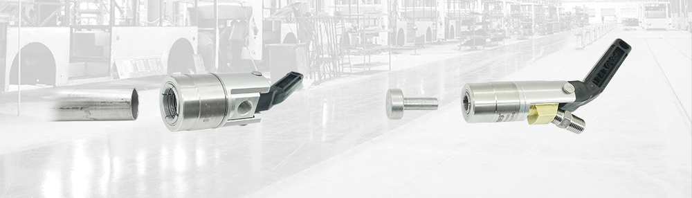
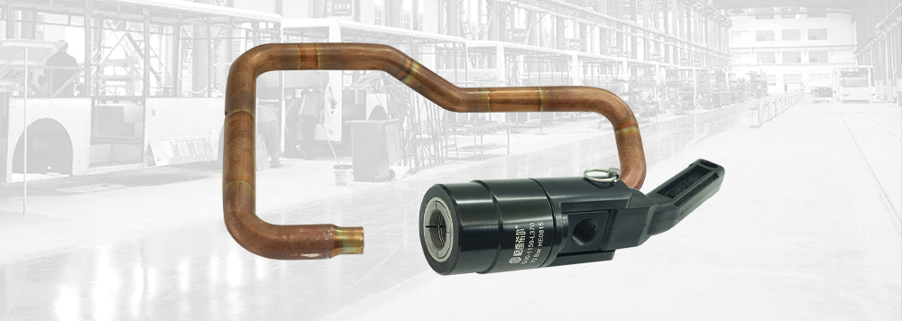
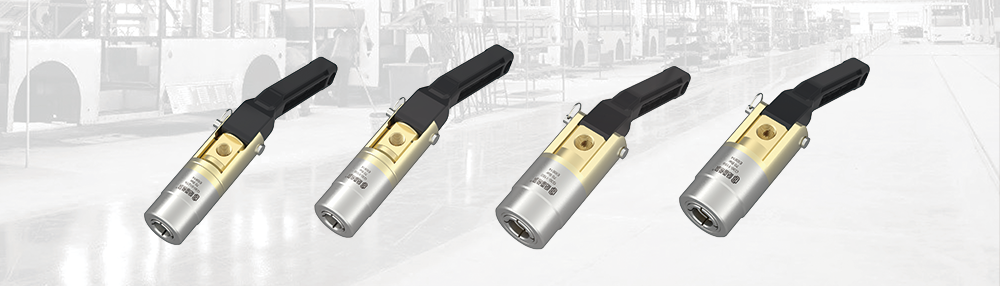

为什么液冷板检漏对连接件要求更高
Background
整车控制器在工作过程中会产生大量热量，液冷板作为降低芯片温度的核心部件，其密封性能至关重要。一旦泄漏，不仅影响散热效果，还可能导致控制器损坏，甚至引发安全事故。因此液冷板在出厂前需要经过严格的气密性测试和通液运行测试，确保在实际工况下长期稳定运行。
产线测试普遍面临高压环境、频繁插拔、密封可靠性等多重挑战。传统连接方式操作复杂、密封效果不稳定，难以满足现代化生产线的效率要求，专用的快速密封连接器因此成为关键工位部件。
G30 系列的四个核心设计
Design
压力辅助密封机制：测试压力升高时密封力随之增强，在高压测试条件下连接处始终保持稳定密封，有效防止泄漏。
快捷操作流程：将接头对准管件插入，扳动手柄 90° 即完成密封连接；断开时待压力归零后将手柄复位即可，大幅减少测试辅助时间。
可靠的抓握结构：内部配置高硬度锁紧爪牙，表面横纹设计增大与管件的接触面积，高压测试中也不易松脱。
多样化材质：提供不锈钢与铝合金两种版本。不锈钢耐腐蚀性与机械强度出色，适合长期高频使用；铝合金版本在保证基本性能的同时更具性价比。
按测试压力与管径选型
Selection

高压测试场景：对测试压力要求较高的液冷板，建议选用不锈钢材质的 G30-A 系列，可承受更高工作压力。常规测试工位用铝合金型号即可满足需求，采购与维护成本更经济。
尺寸适配范围：G30 系列可覆盖 6 mm 至 19.5 mm 外径范围的管件密封需求，液冷板管口尺寸通常落在这一范围内，可按实际管径选择对应型号。
高频使用维护：长期高频次使用的工位建议定期检查密封圈磨损情况与锁紧爪牙状态，及时更换磨损部件以延长接头整体使用寿命。
使用与维护的四点注意事项
Operation① 明确液冷板测试的最大压力值，高压优先不锈钢、常规压力可选铝合金，平衡性能与成本。
② 使用前准确测量管口外径，尺寸匹配度直接影响密封效果和使用寿命。
③ 操作人员需按规程培训；必须在测试压力完全归零后再将手柄复位断开，这一习惯对安全和寿命都关键。
④ 高频工位建立定期维护计划，包含密封圈检查、清洁保养与磨损部件更换。